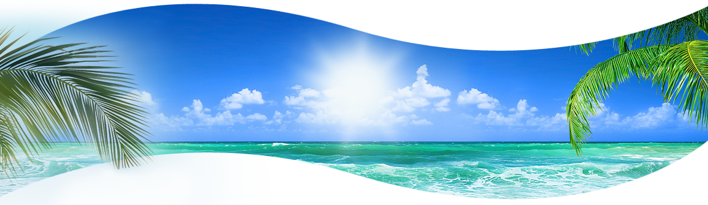

The mesmerizing hues of blue that line Ecuador’s Pacific shoreline attract many travelers from the country’s mountainous regions. The arid coastline offers visitors beautiful beaches, a great diversity of marine life, and fresh seafood.
The area’s mellow beach towns and marine reserves will eventually win visitors over. The multifaceted metropolis of Guayaquil is Ecuador’s largest city. From luxury hotels and fine restaurants to colorful colonial alleyways and plazas, it’s a popular hub for those traveling around the region. For those looking to kick off their shoes and relax beachside, there’s no better place than the laid-back towns of Montañita, Canoa or Mompiche.
Every year from June–September, Ecuador’s coastline hosts thousands of migrating humpback whales. These impressive, 40-ton mammals breach constantly. Concentrated around the city of Puerto López, this area has some of the best whale-watching in the world. The warm water and variety of breaks will be sure to keep you in the water until you’ve caught your fill of waves.
TOP ATTRACTIONS
GUAYAQUIL
As the largest city in Ecuador, Guayaquil is the commercial heart of the country. Its crowded streets contain a vast number of impressive hotels, restaurants and plazas.
The sprawling city of Guayaquil can seem intimidating at first—it’s a big and somewhat chaotic city. The bustling city streets are evidence that this is the largest commercial hub of Ecuador. No matter how busy the city is, visitors shouldn’t be deterred from seeking out the many fine restaurants, museums and plazas. An array of luxury hotels ensure a comfortable visit. And with its international airport, Guayaquil is used as an entry and exit point for visitors from around the world.